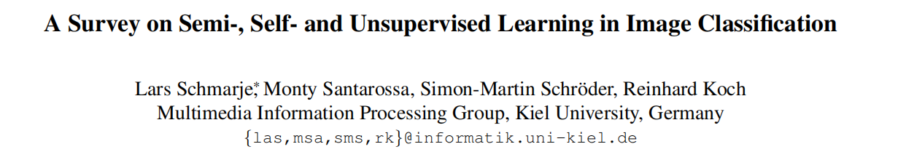
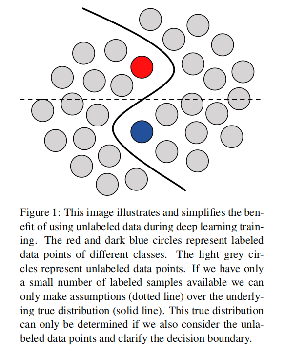
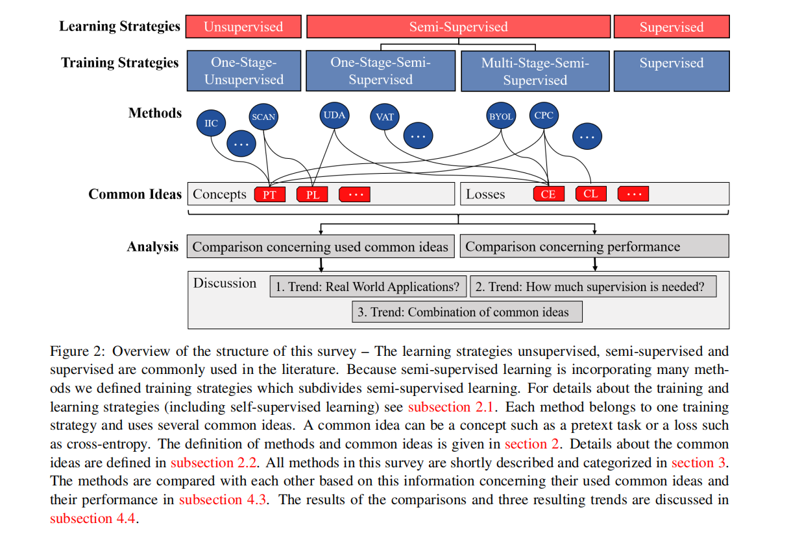
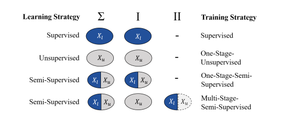
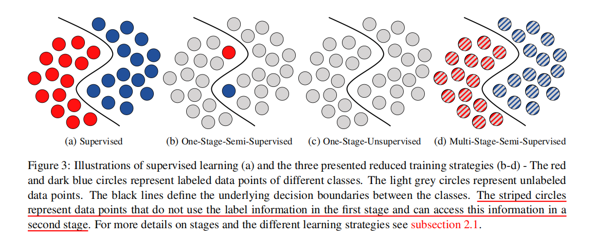
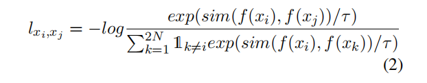

摘要
目前的方法严重依赖于大量的有标注数据。因此，在训练过程中加入未标注的数据是很常见的，这样可以用更少的标注达到相同的结果。本片综述主要是专注于应用无标注数据的分类任务。
未来研究的三个趋势：
- 理论上，SOTA 的方法可以扩展到现实世界的应用程序，但没有考虑类不平衡、健壮性或模糊标签等问题；
- 实现与全监督相近的结果所需要的监督程度正在下降；
- 所有的方法都有一些共同的思想和独立的方法，通过结合不同的想法可以获得更好的性能。
1 Introduction
有标注的图像数量会影响深度神经网络的性能，ImageNet 就包含了大量的有标注数据。但是在现实中，很难获取到那么多的有标注数据（尤其是医学图像）。一个通常的解决方法是迁移学习，但是仍然存在问题：与人类不同，监督学习需要大量的有标注数据。
对于一个给定的问题，我们通常可以获取到大量的未标注的数据集，如何将这些未标注的数据应用于神经网络是近几年研究的一个热点。
- 2016 年，研究了无监督深度学习图像聚类策略；
- 从那时起，对未标注数据的使用进行了多种方式的研究，并创造了无监督、半监督、自监督、弱监督或度量学习等研究领域；
- 无监督：使用未标注的数据
- 半监督（Semi-）：使用有标注和无标注的数据
- 自监督（Self-）：学习自己生产有标注的数据
- 弱监督（Weakly-）：仅使用标签的部分信息
- 度量学习（Metric）：学习一个好的距离度量
这些方法有一个统一的思想，即在训练过程中使用未标注的数据是有益的。它要么使标签较少的训练更健壮，要么在一些罕见的情况下甚至超过监督情况。

无标注数据带来的益处，多研究人员都在 Semi-，Self- 和 unsupervised 领域开展工作。主要的目标是缩小半监督与监督学习之间的差距，甚至超越监督学习。因此，在这一领域有很多研究正在进行。本综述主要目标是跟踪半监督学习、自我学习和无监督学习的主要和最近的研究进展。只基于图像分类任务对这些方法进行比较。
1.1 Related Work
- 无监督聚类算法在深度学习突破之前就有研究，目前仍被广泛使用；
- 已经有大量的调查描述了没有深度学习的无监督和半监督策略；
- 有许多新的综述只关注于 self-，semi- 和 unsupervised learning；
- Clustering deep neural network (CDNN)-based deep clustering
- Cheplygina 等人在医学图像分析的背景下提出了多种方法
- 本综述还包含：metric learning、meta learning、general adversarial networks、graph networks，应用方面：pose estimation、segmentation，数据类型：videos、sketches，其他主题：few-shot、zero-shot
1.2 Outline
-
Section 2：对用到的一些术语进行定义和解释，如方法、培训策略和公共的想法
-
Section 3：对各种方法进行了简要的描述，并给出了训练策略和共同思想
-
Section 4：在四种常用的图像分类数据集上，比较了基于它们所使用的思想和性能的方法；还包括对数据集和评估指标的描述。
-
最后，确定了三个趋势和研究机会。

Figure 2：术语及其依赖关系的可视化
2 Underlying Concepts
训练策略（training strategy）：在训练期间使用无监督数据的一般类型/方法。
根据它们的训练策略对方法进行粗略的排序，但根据使用的共同思想对它们进行详细的比较。
-
$X$：图像数据集，$X = X_l \cup X_u$
-
$X_l$：标注的数据
-
$X_u$：未标注数据
-
$LS_X$：Learning Strategy，dataset X
训练的连续阶段被分成几个阶段，学习策略不同时，连续数据集 Xi 和 Xi+1 的阶段会发生变化。由于这个定义，在训练过程中只能出现两个阶段，图 4 显示了七种可能的组合。

- C 为标签 Z 的类别数
- $f$ 是具有任意权值和参数的任意神经网络
- Input $x \in X$，output is $f(x)$
2.1 Training Strategies
文献中经常使用半监督学习、自我监督学习和非监督学习等术语，但某些方法的定义存在重叠。对于那些难以分类的边缘重叠情况，本综述根据训练期间的阶段来定义一个新的分类法，以精确区分这些方法。

==无监督==学习是训练时没有任何的标注数据。它的目标可以是聚类或良好的表示（good representation）。一个良好的表示对聚类任务是有帮助的。
==自监督==：这种无监督训练是通过生成自己的标签来实现的，因此这些方法被称为自监督方法。K-means 就是经典的无 self-supervised 的无监督方法。通常情况下，在相同或不同数据集的 pretext task 上实现自我监督，然后在下游任务上对预先训练的网络进行微调。
本综述关注的是图像分类，因此大多数自监督或表示学习方法都需要对标记数据进行微调。由于使用了外部标记信息，预训练和微调的结合既不能称为无监督，也不能称为自我监督。
==半监督==学习：使用有标注和无标注数据的方法。半监督和无监督的分类是比较困难的。
在图像分类中，大多数方法要么是非监督的，要么是半监督的。当训练过程中使用标记或未标记的数据时，本综述仅根据粗略的区别来分离方法。把所有半监督(学习)策略、自我(学习)策略和非监督(学习)策略统称为减少监督(学习)策略（reduced supervised(learning) strategies）。
将 stages 定义为使用不同学习策略有监督(X = Xl)、无监督(X = Xu)或半监督(Xu∩Xl =∅) 时训练的不同阶段/时间间隔。
-
two stages：使用自监督在 $X_u$ 上进行预训练，然后在有标注的相同图像上进行微调。
-
one stage：训练阶段使用不同的算法、损失、数据集，但是仅仅使用 $X_u$。
因此，可以将监督方法分类为训练策略：One-Stage-Semi-Supervised、One-Stage-Unsupervised、Multi-Stage-Semi-Supervised。
2.1.1 Supervised Learning
仅仅使用已标注的数据 $X_l$，它对应的标签为 Z。其目标是最小化网络的输出 $f(x)$ 和期望的标签 $z_x \in Z$ 之间的损失。
2.1.2 One-Stage-Semi-Supervised Training
使用 $X_l, X_u, Z$ 在一个阶段完成，所有监督学习策略的主要区别在于使用额外的未标注数据 $X_u$。集成未标记数据的一种常见方法是在监督损失的基础上增加一个或多个非监督损失。
2.1.3 One-Stage-Unsupervised Training
所有采用单阶段无监督训练策略的方法，只使用未标注样本 $X_u$ 在一个阶段进行训练。无监督学习存在多种损失函数，如自动编码器的重构损失（self-supervised）。与自监督方法相比，单阶段无监督方法给出图像分类，而不需要进一步使用标注数据。
2.1.4 Multi-Stage-Semi-Supervised Training
训练分为两个阶段，第一阶段使用 $X_u$，第二阶段使用 $X_l$，或 $X_u$。许多被作者称为自我监督的方法都属于这一策略。通常使用 pretext task 来学习未标注数据的表示。第二阶段，这些表示被微调到 $X_l$ 上的图像分类。
2.2 Common ideas
按字母顺序对这些想法进行了排序，并区分了损失函数和一般概念。
Loss Functions
交叉熵 Cross-entropy(CE)
交叉熵是图像分类中的一个常见的损失函数，由于衡量 $f(x)$ 与其对应标签 $z_x$ 之间的差异。优化的目标是最小化其差异。
P 是所有类的概率分布，近似于神经网络 $f(x)$ 或给定标签 $z_x$ 的 (softmax-) 输出。H 是概率分布的熵；KL 是 Kullback-Leibler 散度。
需要注意的是，交叉熵是 $z_x$ 上的熵与 $f(x)$ 和 $z_x$ 之间的 Kullback-Leibler 散度的总和。
交叉熵损失也可以使用与基于 ground truth 标签的 P 不同的概率分布，这些分布可能基于伪标签或自我监督 pretext task 中的其他目标。
对比损失 Contrastive Loss(CL)
对比损失尝试区分正例和负例（positive and negative pairs），positive pairs 可以是同一图像的不同视图，negative pairs 可以是批处理中的所有其他成对组合。
通过对比去学习表示。近些年，这一思想在自监督视觉表示学习方法中得到了扩展。对比损失函数的例子有 NT-Xent 和 InfoNCE，两者都基于交叉熵。 NT–Xent 的计算是通过含有 N 和样本的子集 X 中的所有 positive pairs 实现的。使用归一化的点积衡量输出之间的相似度。

- N 和 image pairs
InfoNCE 损失的动机与其他对比损失一样，是通过最大化不同视图之间的一致性/共同信息（agreement/mutual information）来实现的。
熵最小化 Entropy Minimization(EM)
在半监督学习中，预测的分布倾向于分布在许多或所有的类别，而不是在一个或几个类别。因此，研究人员建议锐化输出预测，或者换句话说，通过最小化熵迫使网络做出更有信心的预测。
基于神经网络的输出 $f(x)$ 最小化概率分布的熵 $H(\cdot|f(x))$，这个最小化导致了更尖锐更置信的预测。如果这个损失被用作唯一的损失，网络/预测将退化到一个微不足道的极小值。
K-L 散度 Kullback-Leibler divergence(KL)
K-L 散度可以整合为交叉熵的一部分，KL 描述的是两个给定分布之间的差异，通常被用作一个 auxiliary loss。
Mean Squared Error(MSE)
MSE 衡量两个向量之间的欧几里得距离，不是一个概率度量。类似于熵的最小化，如果把这个损失作为网络输出的唯一损失，就会导致网络的退化。
Mutual Information(MI)
定义了两种概率分布 P, Q 作为联合分布与边缘分布之间的 Kullback Leiber (KL) 散度。 在许多降监督的方法中，其目标是最小化分布之间的相关信息。
Virtual Adversarial Training(VAT)